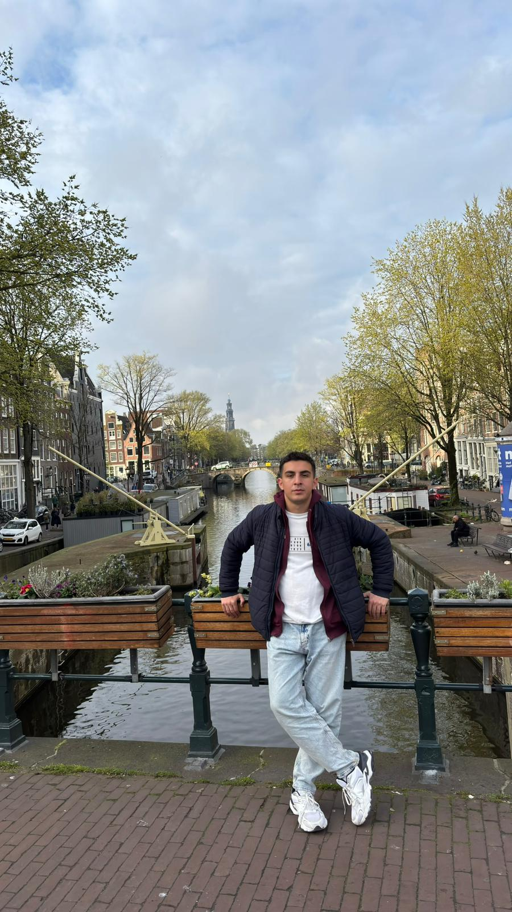
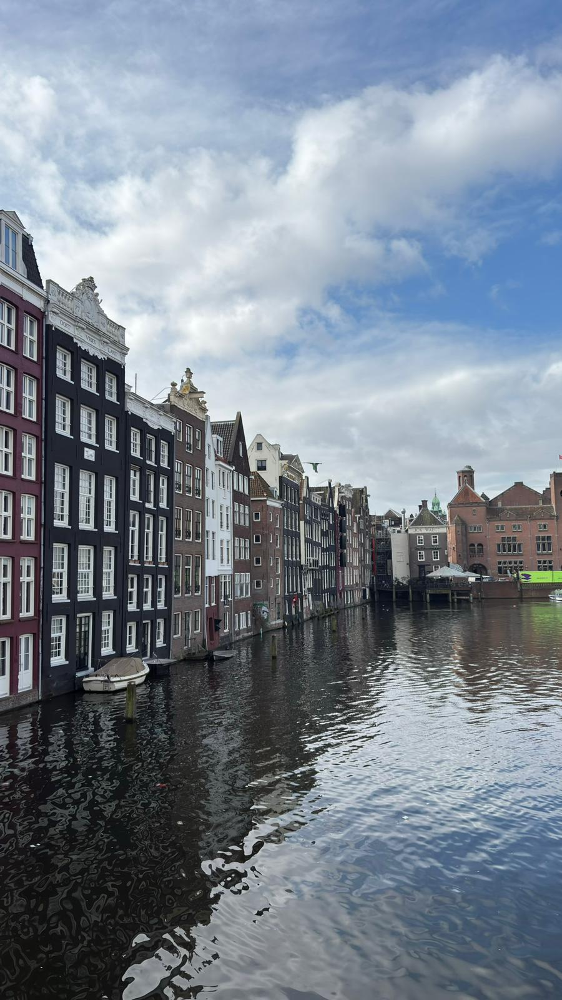
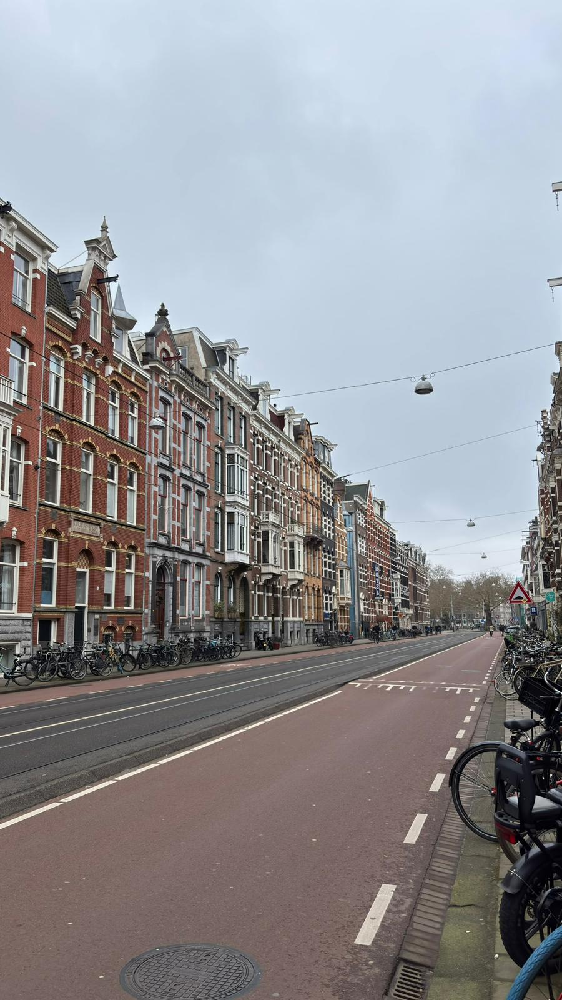
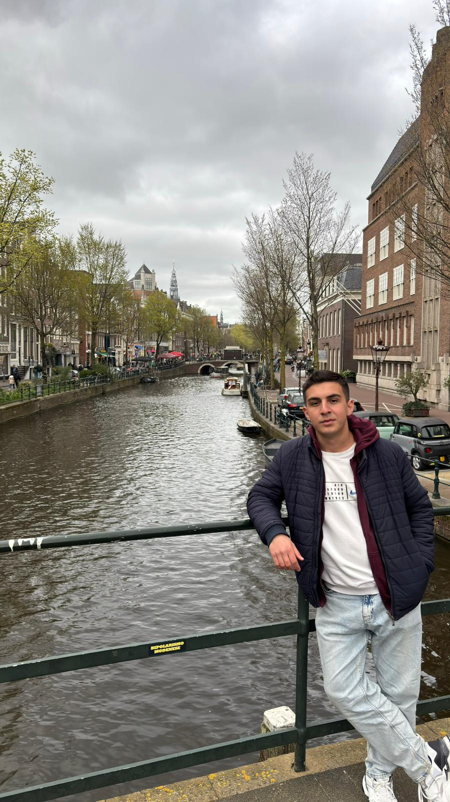

Netherlands
The Netherlands was another country I visited during my Erasmus journey, and the only city I explored was Amsterdam. The city had a unique atmosphere that immediately stood out to me. The canals, bridges, and narrow houses gave it a very different character compared to other European cities I had visited. I also liked the architecture, which added to the charm of the city. Walking along the canals and exploring different neighborhoods was an enjoyable experience, and Amsterdam definitely felt unlike any other place I had seen before. One of my favorite attractions was the Rijksmuseum, which contained an impressive collection of artworks and historical objects. I spent quite a bit of time there and found it much more interesting than I expected. However, despite its unique atmosphere, I was not particularly impressed by most of its tourist attractions. While they were interesting to visit, they did not stand out to me as much as the landmarks and sights I saw in some other European cities. Overall, I enjoyed Amsterdam mainly because of its atmosphere rather than its tourist spots.
Photo Gallery




Cities Visited
- Amsterdam
Favorite Place
Rijksmuseum
My Rating
7/10 ⭐